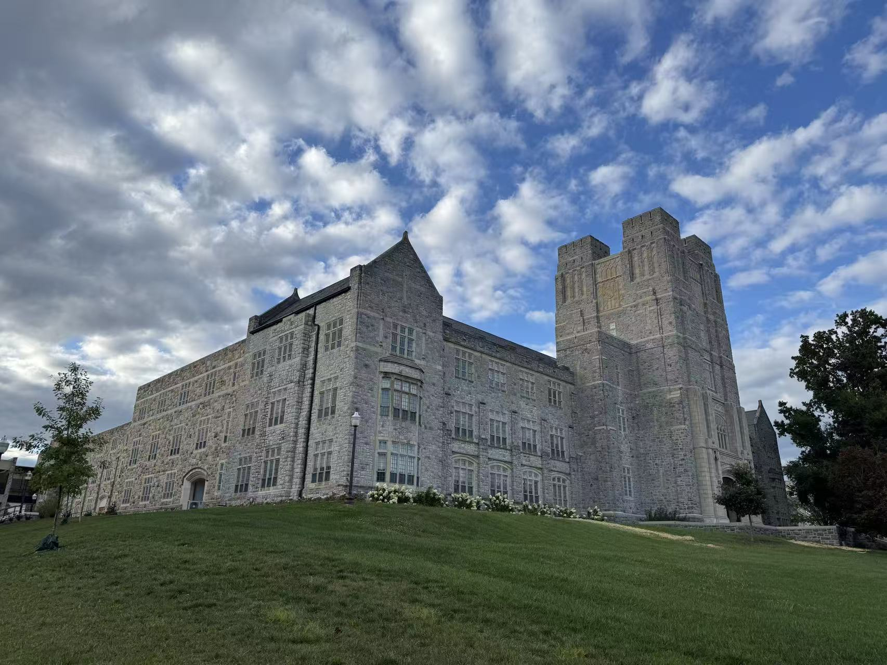

Ph.D. in Geographic Information Science
Virginia Tech, Blacksburg, VA
Advisor: Dr. Fangzheng Lyu
About me
Ph.D. student in Geospatial and Environmental Analysis at Virginia Tech.

Virginia Tech, Blacksburg, VA
Advisor: Dr. Fangzheng Lyu
University of South Carolina, Columbia, SC
Thesis: VLM4S: A Vision-Language Model Framework for Geographically and Environmentally Informed Soundscape Assessment
Advisor: Dr. Sicheng Wang
Wuhan University of Technology, China
Thesis: Transformer-based geographic scene description
Advisor: Prof. Wei Cui
Wuhan University, China
Advisor: Prof. Teng Fei
University of South Carolina (Funded by City of Columbia)
Harvard University (CGA)
Focus: Geographic Big Data Analytics and Spatio-Temporal Data Mining under the supervision of Dr. Yuhang Pan.
Wuhan University
Clemson University (Remote)
Co-authored research in Journal of Transport Geography; processed mobility datasets and generated impact curves for extreme temperatures.